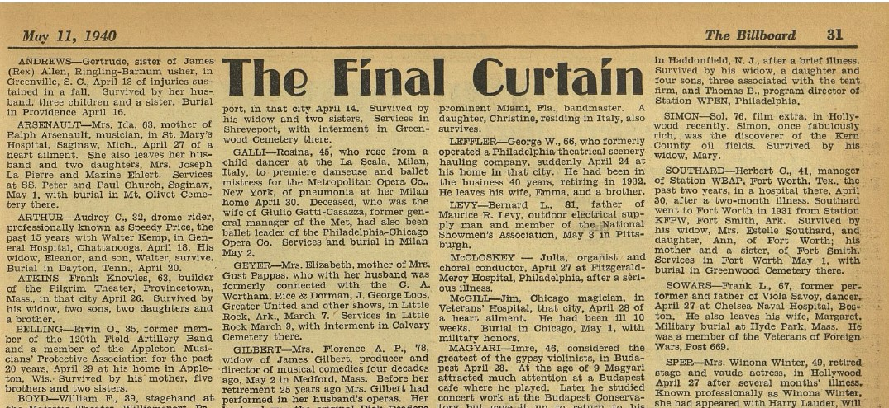

Introduction
This is a brief chronicle of little-known events in the life of Viola Savoy, an actress of theater plays and films. Today, there are several publications about the life and performances of the actress. However, many of these publications do not provide exact references and only refer to articles that also lack precise references. In this regard, and the reason for writing this work, was the opening of a gap that occurred just this year (2025). A couple of months ago I contacted The Billy Rose Theatre Division of the NYPL for information. A publication on The Billboard announced the death of Frank L. Sowars father of Viola Savoy and former performer[1]. This brief note was the starting point of the investigation that led to request and later consult the birth, death, and marriage records in Boston, MA and New York area.
This year (2025) marks the anniversary of the Alice in Wonderland reels (1915). Let this short piece serve as a complement to the existing articles and information about the actress, as well as the theater and cinema scene in New York City during her era.
- 1876 – Lotta Kingstone born to James Kingstone and Mary Stillman in Canada (Buffalo NY?)[2].
- June 15, 1898 – Lotta Kingstone married Frank L. Sowars in Boston, MA[2].
- July 23, 1899 – Viola Kingston Sowars born to Mr. and Mrs. Sowars at 96 Calumet St. in Boston, MA[3][4].
- September 21, 1915 – Lotta Savoy (Lotta Kingston), Viola Savoy's mother and actress, passed away in Bronx, NY[5].
- December 22, 1928 – Viola Savoy returned to New York from Australia, where she acted in Good News. The note also says that she has been in road companies of Broadway productions as Little Jessie James and The Passing Show[6].
- July 15, 1929 – Viola Savoy participated with Orrin Sherman in The Silent Partner a comedy and singing act[7].
- August 12, 1929 – Viola Savoy participates in a quartet act Ye Old Hokum[8].
- March 16, 1931 – A reunion of old-time vaudevillians is announced. Guests includes Viola Savoy[1].
- April 27, 1940 – Frank L. Sowars, Viola Savoy's father, passed away in Boston MA[1].
Conclusion
Though this research chronicles some Viola Savoy's contributions to early theater. There are more information about here on those records (marriage, etc.) but I do not consider it relevant. There remain many unanswered questions about her life after 1940. Key areas still requiring further investigation include her exact date of death (1987), the cause of her passing, and whether she had any relatives, besides her parents, in acting. Did she venture into talking pictures? Did she make any attempt at a career in Hollywood? These details are important to fully understanding the scope of her life and legacy. I encourage future researchers to take up these questions and continue to build on the findings presented here.
Acknowledgments
I would like to express my sincere gratitude to John Calhoun from Billy Rose Theatre Division The New York Public Library for providing me with copies of the articles from that time. I would also like to thank The Reference Staff of The Irma and Paul Milstein Division of United States History, Local History and Genealogy, The New York Public Library for their research efforts in the archives.
References
- "The Final Curtain", The Billboard, May 11, 1940.
- Massachusetts, State Vital Records, 1638–1927
FamilySearch: https://www.familysearch.org/ark:/61903/1:1:N44N-C2Q
Entry for Frank L. Sowars and Lotta M. Kingston, June 15, 1898. - Massachusetts, State Vital Records, 1638–1927
FamilySearch: https://www.familysearch.org/ark:/61903/1:1:FXFQ-Q4R
Entry for Viola Kingston Sowars and Francis L. Sowars, 1899. - Massachusetts, Town Clerk, Vital and Town Records, 1626–2001
FamilySearch: https://www.familysearch.org/ark:/61903/1:1:F46C-8XN
Entry for Viola Kingston/Sowars and Francis L./Sowars, July 23, 1899. - New York, New York City Municipal Deaths, 1795–1949
FamilySearch: https://www.familysearch.org/ark:/61903/1:1:2WDR-DMH
Lotta Savoy, 1915. - "General News", The Billboard, March 21, 1931.
- "The Week on Broadway", The Billboard, December 22, 1928.
- "Sherman and Savoy Using Ruskin Skit", The Billboard, July 20, 1929.
- "Vaudeville", The Billboard, August 17, 1929.